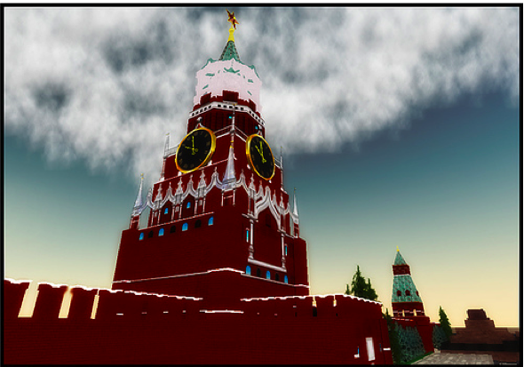

Page index / mapryal_shanghai
PowerPoint Presentation - New Technologies in Second Language
36


Вторая жизнь-Second Life

| Наш
двухмерный компьютерный,
виртуальный
мир тоже переходит
в 3Д. Вторая жизнь
Кремль. Second
Life (SL) — это
3D виртуальный
мир, виртуальное
пространство
с определёнными
свойствами. Здесь
можно создать
виртуальные
товары, строить,
покупкать и продать
виртуальную
землю, создать
виртуальные
предметы, общаться
в чате или голосом,
путешествовать
по многочисленным
примечательным
местам виртуального
мира. К тому же
здесь можно создать
виртуальный
университет,
аидтории для
лекций и практических
занятий. В Second Life сами
жители создают
окружающую среду:
одежду, мебель,
дома, автомобили
и многое другое.
Жители (резиденты)
сами выбирают
и модифицируют
(или покупают
готовый у других
резидентов) свой
внешний вид в
Second Life — вид своего
аватара. Число
зарегистрированных
аккаунтов по
состоянию на
апрель 2008 года достигло
13 миллионов и продолжает
расти. Ежедневно
регистрируются
12-15 тысяч новых
аккаунтов. Одновременно
в мире Second Life находятся
в среднем около
47 тысяч резидентов.
(www.secondlife.com). |